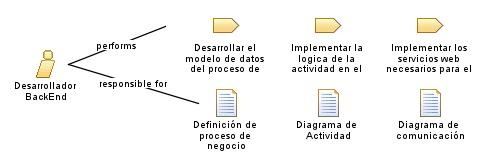

| Role: Desarrollador BackEnd |
| |
 |
| Encargado de programar y desarrollar la lógica y la funcionalidad del módulo de facturación y contabilidad en la parte trasera del sistema. Su objetivo principal es implementar las reglas de negocio, integrar sistemas y garantizar el correcto funcionamiento del back-end del sistema |
| Synonyms: Programador BackEnd |
|
Relationships
 |
| Primary Performs |
|
| Modifies |
|
Main Description
|
Responsable de implementar las reglas de negocio identificadas por los analistas en el código del back-end. Trabaja en
estrecha colaboración con los analistas de negocio y los analistas de requerimientos para comprender los requisitos y las
especificaciones del sistema. Su tarea principal es desarrollar la lógica del negocio, asegurando la correcta manipulación
de los datos financieros, la integración con otros sistemas y la implementación de funcionalidades como la generación de
facturas, el seguimiento de pagos y la generación de informes financieros. |
Staffing
| Skills |
Desarrollo de software, programación, implementación de reglas de negocio, integración de sistemas, resolución de problemas
técnicos, trabajo con bases de datos, conocimientos de lenguajes de programación, trabajo en equipo |
| Synonyms | Programador BackEnd |
|